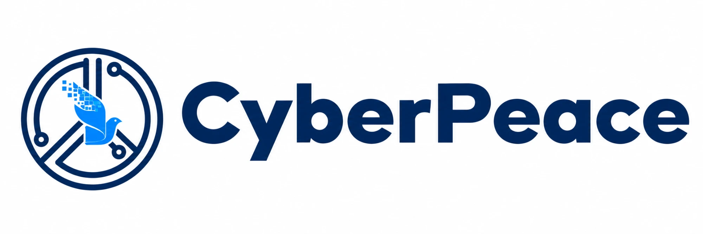
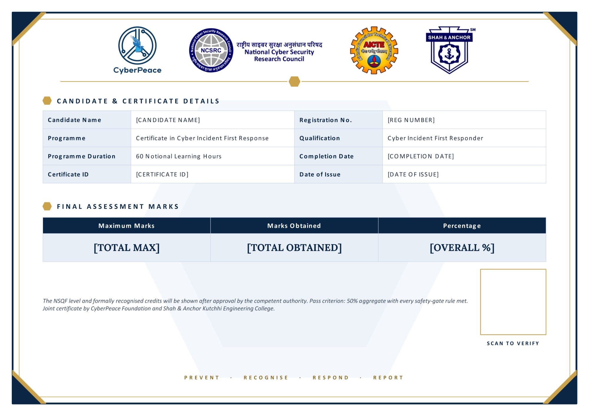

CyberPeace Foundation × SAKEC · Mumbai
Certificate in Cyber Incident First Response
Build the calm, practical skills to help someone after a cyber incident.
- 60 Learning hours
- 9 Modules
- 3 Languages
- Free No cost
A quick first-response check
Something just happened. What first?
Call 1930, then your bank's own number.
The first hour gives the best chance of a hold.
Hang up. There is no digital arrest.
If you paid, call 1930. If you feel unsafe, 112.
Never read it out. Turn on two-step verification.
That code moves your WhatsApp to their phone.
Report it on Chakshu at sancharsaathi.gov.in.
Then delete it. Never open its link again.
Taught in Module 4, incident triage.
What you will get
A joint certificate from CyberPeace Foundation and SAKEC, with 2 academic credits under NSQF Level 4.
- Joint CertificateIssued by CyberPeace Foundation and Shah & Anchor Kutchhi Engineering College
- 2 Academic CreditsNSQF Level 4 qualification, formally recognised
- Qualification TitleCyber Incident First Responder


The certificate in one minute
What a Cyber Incident First Responder learns, and why your neighbourhood needs one.
Sixty hours, four parts
Pass with 50% overall, marked by an assessor who is not your trainer.
| Part | Hours | Where | Assessment |
|---|---|---|---|
| Classroom sessions | 15 | SAKEC or a community centre | Hands-on practice |
| Online modules | 15 | This website, on any device | Module assessments, 50% |
| Field practicum | 24 | Your own community, with a mentor | Practical experience |
| Final assessment | 6 | Online, proctored | Final exam, 50% |
NSQF level and credits appear on certificates only after the qualification is approved.
What the classroom covers
Every module ends with hands-on practice.
- Cyber hygiene and digital safety1.5 h
- Online fraud and scams1.5 h
- Deepfakes, AI threats and misinformation1.5 h
- Incident identification and triage1.5 h
- Evidence preservation1.5 h
- Reporting, escalation and legal basics1.5 h
- Citizen guidance and victim support1.5 h
- Ransomware, malware and account compromise1.5 h
- IoT and smart-device safety1 h
- Capstone simulation1 h
Module 11 is the one-hour assessment: an online test and three practical stations.
Four tiers, one path
The CyberPeace First Responder Competency Framework.
Cyber Aware Citizen
One free workshop.
Community First Responder
This certificateHelp people after a scam.
Senior Responder
Mentor new responders.
Master Trainer
Train others in new districts.
Who runs it
Delivered by SAKEC Department of Cyber Security with the CyberPeace Foundation.
Dr. Bhavesh Patel
Principal, SAKEC
PhD in Computer Engineering.
Dr. Nilakshi Jain
I/c Head, Department of Cyber Security, SAKEC
PhD in Digital Forensics; 18 years of teaching in digital forensics, cyber security and AI.
Maj. Vineet Kumar
Founder, CyberPeace Foundation
Leads CyberPeace work towards a peaceful cyberspace for all.
Check a certificate is real
Every certificate carries a code. Anyone can check it here.